Find your sound. Make yourself at home.
A practical guide to FluidEQ, illustrated with real app captures. Start with your first listening session, then explore each part of the app at your own pace.
31 chapters · 43 real interface captures · OfflineIn FluidEQ: Help → User guide, or press F1.
Real FluidEQ captures from versions 1.6 and 1.7. Colours, labels and control positions may differ in your version. Example settings are illustrations, not recommended presets.
Your first five minutes
Start with a familiar song at a comfortable volume. The left rail switches FluidEQ on and holds the preamp; the centre is your workspace; the right rail follows your output and its profiles. The bar at the foot of the window controls whatever is playing.

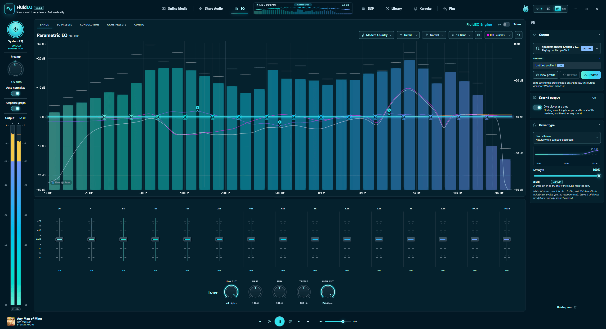
Try it
- Install FluidEQ and keep the FluidEQ Engine selected when setup asks how to process your sound. Windows asks for permission once, with no restart.
- Choose your listening device under Output device. Turn on System EQ and leave Auto normalize on.
- Play a song, open EQ → Bands, make a small change, and compare with System EQ off and on.
Around the window
The header takes you between FluidEQ’s pages and shows the sound as it plays. The left rail holds the switch for the whole EQ, the preamp and the level meter; the right rail follows your output and its profiles.
The header, up to the signal
- 1Online MediaYouTube, YouTube Music, Bandcamp, Twitch and Suno, played inside FluidEQ with your EQ on them.
- 2Share AudioSends this computer’s sound to another one, or plays another one’s here.
- 3EQYour bands, presets, headphone correction, game presets and the engine’s config.
- 4Audio signalWhat is playing, as it plays. Press it to change how it is drawn.
The header, after the signal
- 1DSPThe effects rack: presets, the Room and every stage of the chain.
- 2LibraryYour music files, albums and play queue.
- 3KaraokeSing along, and make karaoke out of your own songs.
- 4PlusVisualizers, the gallery, the leaderboard and the Studio.
- 5Support the workWays to support the work on FluidEQ.
- 6FluidEQ actionsThe engine, your account, importing EQ settings, restarting Windows audio and Processes; Brightness and Transparency, animations, Start with Windows and the language.
- 7HelpThis guide, What’s new, the audio troubleshooter and Report a problem.
The left rail
- 1System EQTurns FluidEQ’s processing on or off for everything the PC plays.
- 2PreampLowers the level before the EQ so boosts have room. Auto normalize sets it for you.
- 3Auto normalizeKeeps the preamp just low enough that nothing you boost can clip.
- 4Response graphShows or hides the response graph.
- 5Level meterThe output level, left and right, in real decibels. Press it to change its style.
Try it
- Press a page in the header: Online Media, Share Audio and EQ before the signal, DSP, Library, Karaoke and Plus after it.
- Turn System EQ on in the left rail and leave Auto normalize on, so no boost can clip.
- Press the signal or the level meter to change how it is drawn, and Rainbow mode to have the curves and meters move at your screen’s full rate.
The Compact player
One switch turns FluidEQ’s window into the Compact player: a narrow column with the song, your equaliser, a visualizer and Up Next, in decks you open and close. Whatever is playing keeps playing, and the same switch brings the full app back on the page you left.
The top: the song, and how it plays
- 1Player menuBack to the full app or to one of its pages, the player’s own Brightness, Always on top and Fold to one line.
- 2Always on topKeeps the player above every other window.
- 3Compact playerBack to the full app, on the page you left.
- 4Time played or time leftTime played. Click it for the time left.
- 5Output levelThe level of the sound leaving FluidEQ, in decibels.
- 6Spectrum analyzerThe sound as it plays. Click it to switch between bars and the wave.
- 7System volumeYour computer’s volume, the same as in Windows: it sets the level of everything the computer plays.
- 8EQ, Vis and QueueOpen and close the equaliser, the visualizer and Up Next. The window grows and shrinks by what each takes.
- 9Position in the songWhere the song is. Drag to jump.
- 10Play controlsPrevious, back five seconds, play or pause, forward five seconds, next and stop.
- 11Shuffle and repeatShuffles Up Next, and repeats nothing, everything or this song.
- 12Next lookChanges the visualizer’s look. Ctrl+click goes back one, and right-click lists them all.
The equaliser
- 1OnTurns FluidEQ’s processing on or off for everything the PC plays.
- 2Smart EQListens to what plays and corrects it: Detail, Balance or Target.
- 3PresetsA ready-made chain for the sound, such as Music or a genre. None leaves only your own bands.
- 4Equalizer curveWhat you hear, drawn: your bands, Smart EQ and anything else applied, over a visualizer look. Also applied lists them, and a tag switches one off without removing it.
- 5PreampLowers the level before the EQ so boosts have room. Auto normalize sets it for you.
- 6BandsDrag a band up or down to boost or cut it. Its frequency is written under it.
- 7ToneBands shows every band; Tone swaps them for the Bass, Mid and Treble dials.
- 8Quick layoutsBand counts, and the band designs you saved.
- 9EQ modeHow strongly your EQ and curves apply, band Q and phase.
- 10Clear EQSets every gain to 0 dB and keeps your bands. Asks first.
Up Next
- 1Up nextWhere you are in the queue, the time left in it, and how far through it you are.
- 2LibraryOpens the Library in the full app.
- 3The songsWhat plays next. Double-click a song to play it, or drop music files here to add them.
The player’s menu
- 1Back to the full appBack to the full app, on the page you left.
- 2Open in the full appOpens the full app on one of its pages.
- 3BrightnessThe player’s own Brightness, apart from the full app’s; Transparency, for the glass player over a visualizer; and Rainbow mode.
- 4Always on topKeeps the player above every other window.
- 5Fold to one lineFolds the player to one line. Double-clicking its strip does the same.
Folded to one line
- 1UnfoldUnfolds the player. The arrow at the other end does too.
- 2Play controlsPrevious, play or pause, next and stop.
- 3Time played or time leftThe time, and where the song is.
- 4EQTurns FluidEQ’s processing on or off for everything the PC plays.
Try it
- Press the Compact player switch in the title bar, beside Help. On the player, the same switch brings the full app back.
- Open and close the decks with EQ, Vis and Queue. The window grows and shrinks by what each takes, and the player remembers its size and place.
- Double-click the player’s strip, or choose Fold to one line in its menu, to fold it down to one line; the FluidEQ mark unfolds it.
- Set the player’s own Brightness in its menu, and keep it above other windows with Always on top.
- Drop music files on Up Next: they join the Library and the queue.
What your PC needs
FluidEQ runs on any Windows PC of the last ten years. Two parts ask for more than the rest: the Plus visualizers draw on the graphics card, and the karaoke AI downloads its models the first time you use it.
Try it
- Check your Windows: Windows 10 version 1803 or later, or Windows 11, 64-bit, 4 GB of memory and about 600 MB of disk. Processing everything the PC plays needs the FluidEQ Engine or Equalizer APO, and Windows asks for permission once while it installs.
- Look at a visualizer: any graphics card or built-in graphics from 2013 onwards. At 1080p built-in graphics are enough; 4K, or a desktop background on several screens at once, is happier with a dedicated card. On a busy card FluidEQ draws the scene smaller and lets go of the ones you cannot see.
- Try the karaoke AI: separating a voice downloads a 713 MB model the first time, the pitch model adds about 180 MB, and noise removal 11 MB. With a DirectX 12 graphics card a four-minute song separates in around half a minute; on the processor alone it takes about four minutes. Keep 2 GB of memory free while it works.
- Aim for this if you can: Windows 11, 8 GB of memory, graphics from 2018 onwards, and 3 GB of disk free if you use the AI features.
The FluidEQ Engine
FluidEQ processes your sound with its own engine or with Equalizer APO. The FluidEQ Engine runs inside Windows' audio service after your sound card's effects, brings your EQ and the DSP rack to everything the PC plays, and steps aside the moment FluidEQ closes.
- 1FluidEQ EngineRecommended. Your sound card's effects keep working, and the EQ and DSP rack reach every app.
- 2Equalizer APORuns custom APO commands, Peace and VST plugins. The DSP rack stays with Library playback.
- 3ApplySwitches the engine. Windows asks once, and audio restarts for a few seconds.
Try it
- Open the actions menu — the pulse button at the top right — and press the engine card at the top of it.
- Choose FluidEQ Engine and press Apply. Windows asks for permission, and audio pauses for a few seconds while it restarts.
- If an output shows OFF, press Enable on its notice. If a notice says the engine is not running, press Restart Windows audio.
Shape your sound with EQ
Frequency chooses where a band acts, Gain sets the boost or cut, and Q sets its width: higher Q is narrower. With no band selected, the Tone dials — Bass, Mid and Treble, with Low cut and High cut on either side — shape the sound as a curve of their own and leave your bands as they are. Begin with small, broad changes and compare often.
The Bands page, nothing selected
- 1PresetsA ready-made chain for the sound, such as Music or a genre. None leaves only your own bands.
- 2Smart EQListens to what plays and corrects it: Detail, Balance or Target.
- 3EQ modeHow strongly your EQ and curves apply, band Q and phase.
- 4Quick layoutsBand counts, and the band designs you saved.
- 5Add bandAdds a band beside the selected one.
- 6CurvesWhat else shapes this output — a headphone correction, Smart EQ, a convolution — each with its strength, its switch and ×.
- 7Clear EQSets every gain to 0 dB and keeps your bands. Asks first.
- 8A bandDrag its point to boost or cut. Click its frequency to select it.
- 9BassRaises or lowers the low end of the whole curve.
- 10MidRaises or lowers the middle, where voices sit.
- 11TrebleRaises or lowers the top, the air and the detail.
A band selected
- 1Game modeCuts the delay FluidEQ adds, for games and calls. Gaming presets turn it on.
- 2Selected bandThe band being edited. Ctrl-click or Shift-click to select several.
- 3FilterIts shape: a peak, a shelf, a notch or a pass filter.
- 4FrequencyWhere the selected band acts, from 1 Hz to 20 kHz.
- 5GainHow much it boosts or cuts. Ctrl-click returns it to 0 dB.
- 6Quality (Q)How wide it is: higher is narrower.
- 7ActiveTakes the band out of the sound and keeps its settings.
- 8Delete bandPress twice to delete the band; Keep changes your mind.
A band's right-click menu
- 1Reset bandGain back to 0 dB and Q back to 2.
- 2Disable bandTakes the band out of the sound and keeps its settings.
- 3Add band to the leftAdds a band halfway to its lower neighbour.
- 4Add band to the rightAdds a band halfway to its higher neighbour.
Try it
- Open EQ → Bands. With nothing selected, turn Bass, Mid or Treble for a quick change of tone, and Low cut or High cut to trim the extremes. They draw their own Tone line on the graph.
- Click a band’s frequency, or its point on the graph, to select it. Turn its Frequency, Gain and Quality (Q) dials, pick a Filter, or switch it off with Active.
- Right-click a band to reset it, switch it off, or add a band beside it. Press Clear EQ to set every gain, and Bass, Mid and Treble, to 0 dB while keeping your bands. It asks first.
EQ mode and band designs
EQ mode changes how your sound is shaped, without editing anything. Your EQ covers your bands, the Tone, presets, Driver type and Smart EQ; Corrections covers headphone corrections and imported or custom curves. Band designs keep the frequencies and Q of a layout you like, ready for any output.
EQ mode
- 1ResetEverything back to Normal.
- 2StrengthNormal, Studio ×1.5 or ×2, for Your EQ and your Corrections separately.
- 3Band QConstant keeps each Q; Proportional and Asymmetric narrow bands as they grow.
- 4PhaseMinimum or Linear. With the FluidEQ Engine only.
- 5TreblePrecise plays treble as drawn; Classic as Equalizer APO does. With the FluidEQ Engine only.
- 6Curve smoothingSoftens sampled correction curves.
Band designs
- 1Built-in layoutsStandard layouts of 6, 10, 15, 20 or 31 bands.
- 2Save design…Names the current frequencies and Q as a design, listed under My designs.
Try it
- Open EQ mode on the Bands toolbar. Try a Strength, Band Q or Curve smoothing choice while music plays; the panel stays open.
- Under the FluidEQ Engine, choose Minimum or Linear phase, and Precise or Classic treble. Press Reset to return everything to Normal.
- Open the layouts button beside Add band. Pick 6, 10, 15, 20 or 31 bands, or press Save design… to name the current layout.
Game presets
Give each game its own sound. When the game comes to the front, FluidEQ switches to that sound and keeps it until you close the game, whatever you alt-tab to in between. Then it puts back what you had.
- 1Game presetsYour games and the sound each one gets.
- 2Add a gameAdds a game from Steam, Epic, EA, GOG, Ubisoft, Battle.net or Xbox, or any program that is open now.
- 3A gameThe game, and the folder FluidEQ knows it by.
- 4Its soundThe sound FluidEQ switches to when this game comes to the front, or Leave it as it is.
- 5RemoveForgets the game. The preset it used stays.
Try it
- Open EQ → Game presets and press Add a game. Pick one from your launchers, a program that is open now, or choose its program yourself.
- Pick the sound it should get in the picker on its row: a Gaming preset, or any other.
- Start the game. A card on the desktop says what FluidEQ switched to, and another says what came back when you close it.
Headphone correction & imports
A headphone correction compensates for a measured model. It is a starting point you can combine with your own bands and presets. Check the exact model and the measurement author before applying a result.

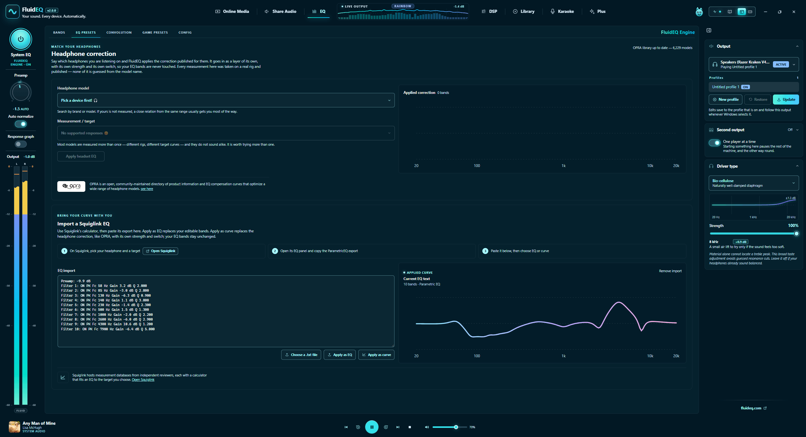
Try it
- Open EQ → EQ presets and search for your headphone model. Review the available measurements and choose the matching entry.
- For EQ text from another tool, use Import EQ settings in the actions menu. Review the parsed bands and curve before applying.
- For Squiglink, paste its export into the import panel. Apply as EQ replaces your bands; Apply as curve adds it as a headphone correction with its own strength.
Use an impulse response
Convolution applies a WAV impulse response as another correction layer. FluidEQ includes a searchable AutoEq catalogue and can import your own WAV. It remains separate from the editable parametric bands.

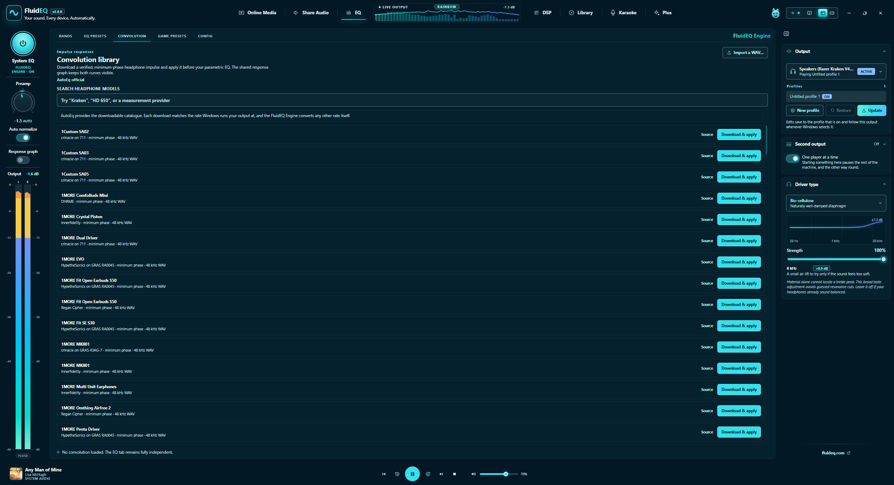
Try it
- Open EQ → Convolution. Search by model or measurement author.
- Check the source, then use Download & apply; the download matches your output’s rate. Use Import a WAV for a file you already have.
- Listen with the convolution layer on and off in Curves.
Devices, profiles & second output
Your EQ follows the output device. Edits save to the profile playing on the current output, and Profiles lets you keep alternative sounds. Second output mirrors playback to other devices with a separate level for each.
- 1Output deviceThe output you are listening on. OFF means your EQ does not reach it; ACTIVE, that Windows is playing through it.
- 2ProfilesSounds you saved. ON marks the one this output uses; press another to switch.
- 3New profileStarts a new profile from the EQ you have now.
- 4UpdateSaves your changes into the profile you are on. Restore, beside it, brings the profile back as you last saved it.
- 5Automatic mappingThe profile this output follows. Any change you make is saved to it by itself.
- 6One player at a timeStarting something in FluidEQ pauses what plays elsewhere on the PC, and the other way round.
- 7Second outputYour other outputs. Switch one on to play there too, with its own profile.
- 8Driver typeA gentle starting point for what you listen on — headphones, earphones, a driver size or material. Leave it at No compensation if the sound is already right.
Try it
- Check the output at the top of the Output card before editing. Use New profile for a sound you want to keep; Update saves changes to that profile, and Restore brings its saved settings back.
- Open Second output, switch on a reachable device, and set its level. Choose that device’s saved EQ profile directly beneath it.
- Use Game/Video for a smaller starting buffer or Music for more reserve. Compare synchronization on your devices.
Inspect & back up a chain
EQ → Config shows what the audio engine actually has on disk. The output cards and include tree help you see which device and layers are involved. Export a chain before a large experiment or when moving a setup.

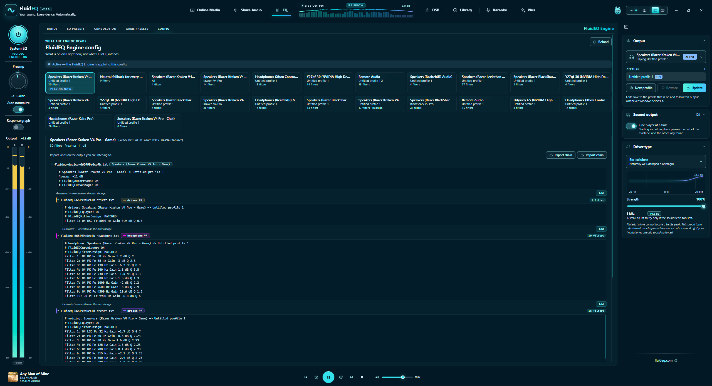
Try it
- Open EQ → Config and choose the output you want to inspect. Read its status and active layers.
- Use Export chain to save a .fluideq file. Keep a copy somewhere you can find again.
- To bring a chain back, select the intended output first, then use Import chain and review the result.
Explore the DSP rack
The DSP rack is a chain of studio stages. Under the FluidEQ Engine it processes everything the PC plays; under Equalizer APO it processes Library audio tracks. It is off while FluidEQ is switched off.
- 1PresetsWhole-rack chains for genres, devices and repairs.
- 2Game modeCuts the delay FluidEQ adds, for games and calls. Gaming presets turn it on.
- 3NormalizerEvens out loudness. On live audio it levels song by song.
- 4DenoiseRepairs hiss, hum and clicks. The neural voice cleaner works on Library tracks.
- 5ExciterAdds harmonics for body and air.
- 6Bass ForgeAdds a real octave below the bass, or its harmonics for small speakers.
- 7EqualiserFifteen parametric bands, with minimum or linear phase.
- 8Bass PunchShapes the attack, sustain and bloom of the bass.
- 9DimensionWidens the stereo picture without changing the mono sum.
- 10RoomSurround on headphones: each channel becomes a speaker in a room around you.
- 11MaximizerRaises the level without letting peaks pass the ceiling.
- 12MasterFinal level, loudness target and peak safety.
- 13CrossfadeBlends one Library track into the next.
Try it
- Open DSP. Pick a chain under Presets, or select a stage in the rail and switch it On.
- Change one control at a time and compare with the stage bypassed at a similar volume. Isolate lets you hear only what a stage adds.
- Save a rack you like, and use Export and Import to share it.
The Room: surround on headphones
The Room turns headphones into a listening room. Every channel of the sound becomes a speaker standing around your head, rendered through a measured head and the reflections of a room you shape yourself, so a film sits in front of you and a game surrounds you. It needs the FluidEQ Engine and headphones; on speakers it does nothing useful.
- 1Room presetThe rooms to start from, grouped like every other stage's profiles; Custom once you shape one.
- 2SaveName the room as it stands; it comes back with a press.
- 3What the room is doingRead from the engine: which speakers the playing stream reaches, or why the room is idle.
- 4The room from aboveThe room from above: walls that fade as they absorb, the speakers on their ring, the head in the middle. All of it is drawn to one scale, so a speaker standing further out than the room is wide is drawn outside its walls. Drag one and its pair moves with it; hold Shift to move it alone.
- 5The chosen speakerPress a speaker in the room and this pane becomes its own: its angle as a number, its own distance, its level, and Mute or Solo to hear it alone.
- 6Space, Ambience, DistanceHow much of the walls you hear, the soft tail after them, and how far the speakers stand. Size, Walls and the tail's own length and tone are in Room character below.
- 7Start the listening testFive listening pairs that pick the head for your ears.
- 8HeadThe measured head the room renders through: small, medium or large.
Try it
- Open DSP, choose Room in the rail and switch it on. Stereo becomes two speakers in front of you; a 5.1 film five and the sub; a 7.1 game the whole ring. The chip beside the switch says which.
- Pick a room at the top — studio, living room, cinema, concert hall and more — or turn Size, Walls and Distance yourself and drag a speaker around the ring. Speakers the playing stream cannot reach are drawn asleep.
- Press Start the listening test and answer five short listening pairs: the room takes the head that puts sounds in front of you. Small, Medium and Large can be chosen by hand too.
- Save a room you like under a name; a saved room comes back with a press and never changes your head.
Denoise & source analysis
Denoise reduces hiss, mains hum and clicks. Under the FluidEQ Engine it works live on anything the PC plays; the neural voice cleaner and the scanned noise floor are for Library tracks. Stronger reduction is not automatically better.

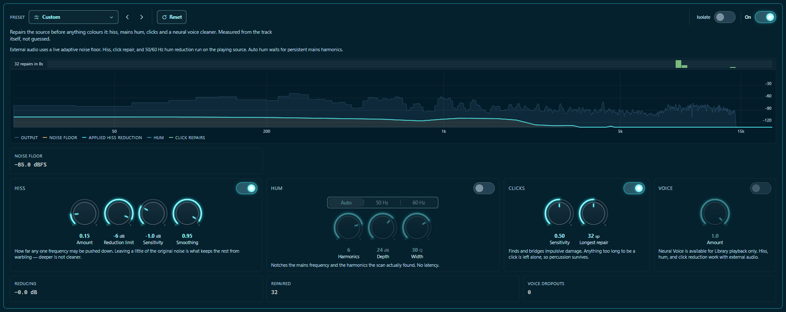
Try it
- Play something with the noise you want to reduce and select Denoise in DSP.
- Switch on Hiss, Hum or Clicks with a light setting, and listen to quiet passages and to musical detail.
- Increase reduction gradually, then bypass the stage to check that the improvement is worth any loss of detail.
The graph and its controls
The response graph draws your EQ curves over the live sound. The strip above it chooses what is drawn and how, and it changes with the look: a standard style or a Plus visualizer.
With a standard style
- 1Live outputShows or hides the live wave.
- 2Previous styleSteps back to the previous look.
- 3Styles and visualizersOpens every style and visualizer.
- 4Next styleSteps forward to the next look.
- 5AutoChanges the look every 10 seconds to 2 minutes.
- 6ColouringColours the style: Auto, Flat, Frequency, Level or Heat.
- 7New lookDesigns a look of your own from this style.
- 8Listening bandsShades the bands you hear most.
- 9GridShows or hides the grid and scales.
- 10ViewSize, what is drawn, and the wave.
With a Plus visualizer
- 1LikeLikes the scene playing, which gives its maker points. On a scene of your own it shows how many likes it has.
- 2Window coloursThe app's theme, the visualizer's colours, its colours with light (Ambient), or the visualizer behind the whole window (Backdrop).
- 3Dynamic lightingLights your RGB devices with this scene.
- 4Set as desktop backgroundPuts this visualizer behind your desktop icons.
The View menu
- 1Expand viewCtrl+SThe graph grows over the editor.
- 2Full screenCtrl+FThe graph fills the screen.
- 3Set as desktop backgroundPuts this visualizer behind your desktop icons.
- 4ShowingCtrl+WSteps through what the graph shows.
- 5The waveThe live spectrum drawing.
- 6Top waveThe small wave in the title bar.
- 7GridCtrl+GShows or hides the grid and scales.
- 8Listening bandsThe same shading; greyed over a Plus visualizer, which never draws it.
- 9Level meterThe output meter in the left rail.
- 10Wave heightHow tall the wave is drawn.
- 11Wave positionFrom the bottom edge up to the middle.
- 12Next styleSpaceSteps forward to the next look.
- 13Previous styleCtrl+SpaceSteps back to the previous look.
- 14AttackHow fast a Plus visualizer rises to the music.
- 15ReleaseHow slowly it falls back after each hit.
- 16Use its own timingBack to the timing the visualizer came with.
Try it
- Click the look’s name to choose a style or visualizer. The arrows beside it, Space and Ctrl+Space step through them.
- Open View for the graph’s size, what it shows, and the wave’s height and position. Frame rate is there too: every frame your display offers, or 60 or 30, held at 60 on battery.
- A Plus visualizer adds its own controls to View — whatever its author left for you to set — and Use its own wave puts the wave back to the height and position that author chose.
- Double-click the plot for full screen, or Ctrl+double-click to expand it over the window; double-click again to come back. A single click hides or shows the strip.
- Keys: Ctrl+F full screen, Ctrl+S expanded, Esc back to the normal view, Ctrl+G the grid, Ctrl+W what the graph shows, Ctrl+I which way the wave faces, Ctrl+A every band. On a band’s point, drag to move it and right-click for its menu; Ctrl+scroll changes the Q of a selected point.
Styles and Plus visualizers
Standard styles are free drawings of the live sound that you can colour and design yourself: Line and Area for a clean trace, LED blocks and Spikes for punch, Truss, Skyline and Dancing flames for whole scenes. Plus visualizers are scenes drawn on the graphics card, such as Alpine, Aurora, Bloom and Neon City, where the bass, the beat and the treble each move something different.
- 1SearchFinds styles and visualizers by name, maker or category.
- 2StylesFree styles drawn by FluidEQ, and the looks you saved.
- 3Plus visualizersScenes from FluidEQ and from members, and your own under Made by you.
- 4Style filtersAnalysis and Scenes, and Yours once you have saved a look.
- 5CategoriesNature, Cities, Abstract and more.
Try it
- Click the look’s name on the graph. Search, or filter the styles by Lines, Fills, Bars, Points or Scenes.
- Choose a Plus visualizer on the right. Without Plus it is locked, and choosing it explains how to get it.
- On a standard style, press New look to change its colours, motion and peaks, then save it; it appears under Yours.
FluidEQ Plus and your account
An account is optional: everything that was free runs on this computer without one. FluidEQ Plus, monthly or yearly, adds Visualizers, the Leaderboard, the Studio, Dynamic lighting and the desktop visualizer. A new account can try Plus free for fifteen days, and a scene you publish that is approved earns you a month.
- 1Collapse the sidebarFolds the rail to its pictures; it opens again on hover.
- 2LeaderboardWho listens most, among Plus members who join.
- 3VisualizersScenes by FluidEQ and members, ready for your music.
- 4StudioMake your own scenes with your AI.
- 5Dynamic lightingYour RGB devices follow the scene.
Try it
- Open Account in the actions menu. Sign in, or create an account and type the six-digit code sent to your email.
- Press Upgrade to Plus, read the terms, tick that you agree, and pay on Buy Me a Coffee in your browser with the same email.
- Open the Plus tab. Its rail leads to the Leaderboard, Visualizers, the Studio and Dynamic lighting.
The Visualizers gallery
Visualizers holds FluidEQ’s own scenes and the ones members publish. Any account can browse and try FluidEQ’s free samples for ten seconds; Plus plays every scene on your music and adds it to your looks.
- 1ManageWhat each monitor shows as a desktop background.
- 2StopStops every desktop background.
- 3Search scenes or makersFinds scenes and makers.
- 4SortMost liked, liked this week, or newest.
- 5Your scenesThe scenes you published, with their likes.
- 6CategoriesShows one kind of scene.
- 7A sceneIts picture opens the scene; Add puts it in your looks.
A scene's page
- 1BackBack to the gallery, where you left it.
- 2Play on the graphAdds the scene to your looks, or plays it on the graph.
- 3Set as desktop backgroundPuts the scene behind your desktop icons.
- 4Open in StudioOpens FluidEQ’s scene in the Studio to see how it is made.
Try it
- Open Plus → Visualizers. Search, sort by Most liked, This week or Newest, or pick a category.
- Open a scene, press Add to my looks, then Play on the graph. The arrows, or ← and →, step between scenes.
- Like members’ scenes with the heart, and report one that should not be there.
The Leaderboard
The Leaderboard ranks the Plus members who join it, by how much they listen and by the likes their scenes earn. It is off unless you join.
- 1All time or This monthThe whole history, or this month only.
- 2How to earn points10 points an hour, 20 for each day of 30 minutes or more, 5 for each like.
- 3Your standingYour rank and points, and how far the next place is.
Try it
- Open Account and press Join the leaderboard.
- Open Plus → Leaderboard. Choose the handle and name the board shows, then switch between All time and This month.
- To stop, press Leave the leaderboard. Remove all my data deletes everything you sent.
Make scenes in the Studio
The Studio turns a description into a visualizer. Your own AI assistant writes the scene in a project folder, and FluidEQ plays each version on your music the moment it is saved. The Studio is part of Plus; a new account can open it on the free trial.
- 1ProjectYour projects, and FluidEQ scenes to look inside.
- 2FullscreenTries the scene full screen.
- 3Preview audioTest signals that drive only this preview.
- 4StageThe scene, playing on your music. Double-click for full screen.
- 5What it hears nowWhat the scene receives: level, beat, bass, mids, treble.
- 6CodeThe scene’s code, live, updated as your AI saves it.
- 7Wave on the graphTries the wave height and position listeners can set.
Try it
- Open Plus → Studio and press New project…. Give it a name; FluidEQ makes its folder with a scene that already moves.
- Describe your idea, open the folder in your AI assistant, and paste the prompt from Copy AI prompt.
- Watch the stage as files are saved and try the test signals. Then Add to my looks, Publish… or Export….
The desktop visualizer
The desktop visualizer puts a Plus visualizer behind your desktop icons, on one monitor or on each of them, for as long as FluidEQ runs.
- 1MonitorsYour monitors as Windows arranges them. Press the ones to use.
- 2With the musicMoves to whatever is playing.
- 3CalmA slow, quiet animation that ignores the music.
- 4Follow graphChanges with the Plus visualizer on the graph, whether you pick it or automatic switching does.
- 5Pause on battery powerSaves power while the computer is unplugged.
- 6Set backgroundStarts it on the monitors you chose.
Try it
- Put a Plus visualizer on the graph and press the monitor button beside its name, or choose View → Set as desktop background.
- Press the monitors on the map, choose With the music or Calm, and press Set background.
- To change or stop it, open Plus → Visualizers and use Manage or Stop at the top.
Dynamic lighting (beta)
Dynamic lighting lights your keyboard, mouse, mousepad, headset and stand with the Plus visualizer on the graph, through Windows Dynamic Lighting and Razer Chroma. It is in beta, so tell us how your devices behave.
- 1Light my devices while a Plus scene playsLights your devices while a Plus visualizer plays.
- 2Browse visualizersOpens the gallery to choose a visualizer.
- 3Live desk previewYour own desk, lit with the colours sent to it.
- 4All devicesBack to tuning every device at once.
- 5Lighting styleScene, Colour wave, Spectrum or Beat ripple, kept for each visualizer.
- 6Your devicesEvery device found. Click one to tune it alone.
Try it
- Open Plus → Dynamic lighting and switch it on, or press the lighting button beside a Plus visualizer on the graph.
- Choose this visualizer’s lighting style — Scene, Colour wave, Spectrum or Beat ripple — and set its brightness and what it responds to.
- Click a device under Your devices to tune it alone; All devices goes back to every device.
Listen with Online Media
Online Media keeps supported sites beside your EQ. Site playback and sign-in still depend on the provider and your connection. The bar at the foot of FluidEQ follows the active player, and its volume is your computer’s own.

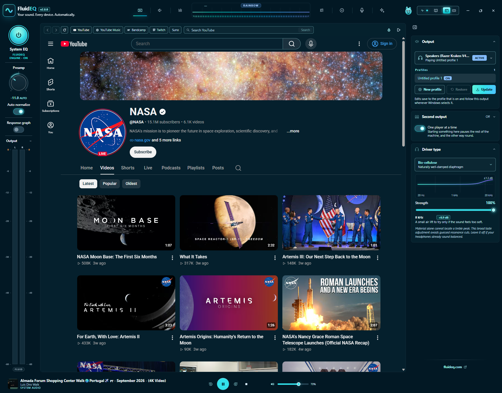
Try it
- Open Online Media and choose a supported site. Find and start something on that page.
- Switch to EQ to tune while listening, then return to the page when you need its own controls.
- Use One player at a time if you want FluidEQ and other players to pause one another instead of overlapping.
Build your local library
Library brings together music and video from your drives. Browse by albums, artists, genres, songs, folders, a folder tree or your playlists. Album art and details come from your files, so the same collection may look different depending on its tags.

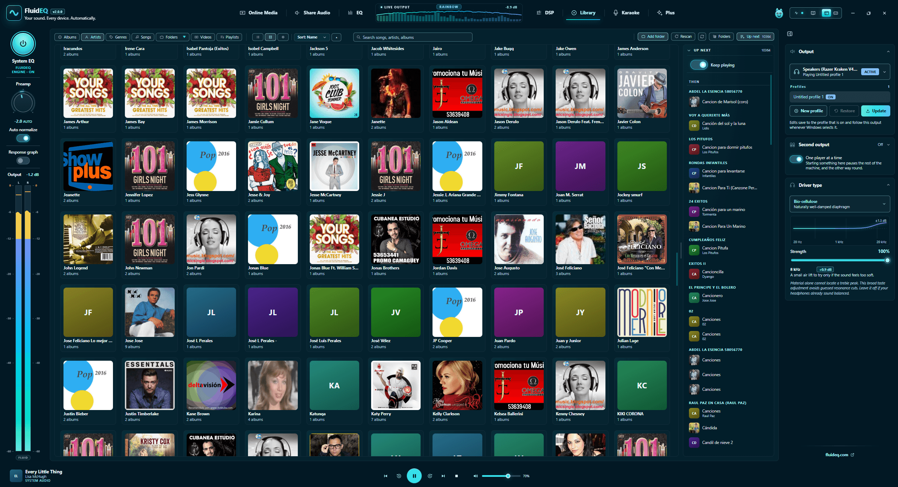
Try it
- Open Library and add the folder containing your media. Let the scan finish before judging what is missing.
- Choose an artist or album, or search for a song. Start a track from the results.
- Use the bar at the foot of the window to pause, seek and skip. Its volume is your computer’s own, the same as in Windows.
Albums & your play queue
The queue is the listening order; browsing is where you choose music. Opening another album lets you explore without making it the current song. The active track and Up next help you keep your place.

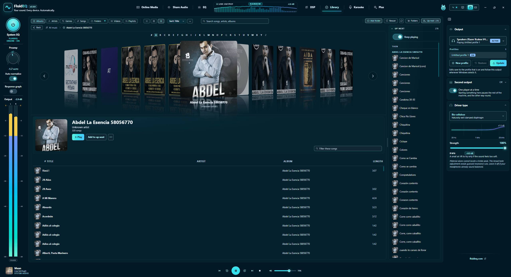
Try it
- Open an album to inspect its tracks. Start the one you want to hear.
- Right-click a song for Add to up next, Add to Favourites or Add to playlist.
- Open Up next to see what plays after, and turn on Keep playing to continue with more of the same genre.
Sing with Karaoke
Karaoke pairs your own audio with lyrics. Timed lyrics follow playback; pitch targets depend on the song’s note data. A microphone adds your live pitch when configured, and the stage can fill the screen.

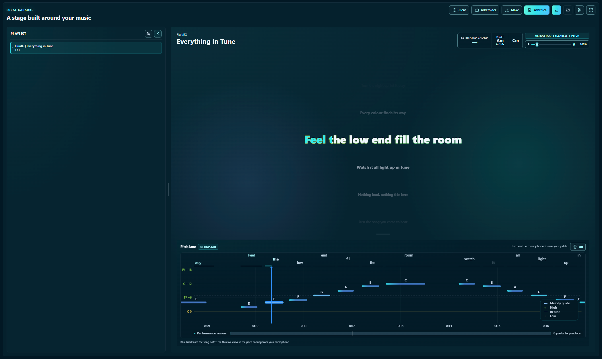
Try it
- Open Karaoke. Use Add files or Add folder to bring in audio and matching lyric files.
- Choose a song and start playback. Check that the correct lyrics and backing track are paired.
- Configure microphone input for live pitch, adjust lyric size for your viewing distance, and use the stage’s fullscreen control to sing.
Create in Karaoke Maker
Maker turns your audio into an editable karaoke project. Its timeline brings together audio, lyrics and pitch notes. Automatic results are a starting point: check words, timing and notes against the recording.

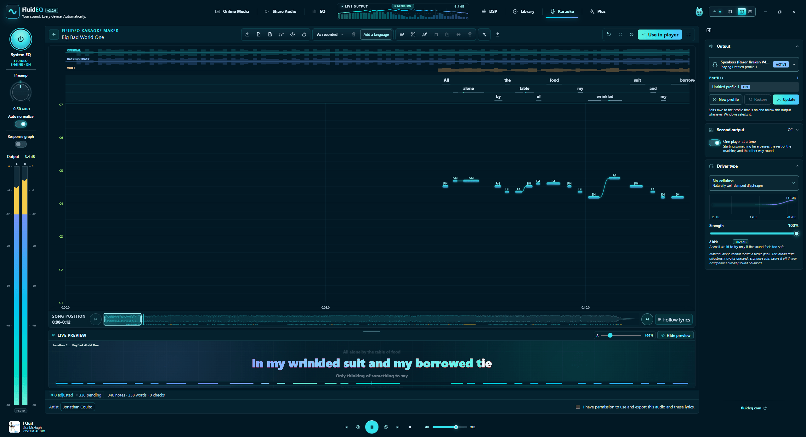
The tools along the top of the maker
- 1Import karaokeOpens a karaoke file or a saved project, and keeps the audio already loaded.
- 2LyricsThe words and their timing, in one window.
- 3Lyrics timingMoves the words and notes together, for a song that runs early or late from the first second.
- 4Hand · pan timelineDrag anywhere on the timeline to travel through the song without changing anything.
- 5Lyrics languageWhich language the words are in, and a second one beside it so the song can be sung in either.
- 6Record line entriesPlay the song and press a key as each line starts and ends. The timing comes from your presses.
- 7Select notesDraw a box around notes to move or delete them as one.
- 8Paint notesDraw the melody straight onto the pitch grid.
- 9SplitCuts a word into syllables, so a long word can carry a note on each one.
- 10Repair toolsThe tools that listen for you, and the models they need.
- 11ExportWrites the finished karaoke out as a FluidEQ project, UltraStar TXT, LRC or enhanced LRC.
The words, and when each one is sung
- 1Reference lyricsThe whole song as text, one line per row. Paste it or load a file; FluidEQ finds the timing from it.
- 2Word timingEvery word, in order, with how many are timed so far. Press one to work on it.
- 3Selected wordWhere the chosen word starts and how long it lasts. Moving its edge gives or takes time from the word beside it; the line keeps its length.
The AI tools, and the models they need
- 1Separate voice from musicSplits the recording into voice and music, so the karaoke can play without the singer.
- 2Load vocal-only trackUse a vocal-only file you already have, instead of separating one here.
- 3Re-detect lyric timingListens to the voice again and re-times the words you already have.
- 4Re-detect melody notesListens again for the melody and rewrites the notes under the words.
- 5AI model memoryWhat each model needs and whether it is on this computer. They are downloaded the first time you use one.
- 6When it is idleWhether a model stays in memory between uses, and for how long. Releasing it frees memory; keeping it makes the next run start at once.
Try it
- Open Make from Karaoke and load the source audio. Choose the available separation or transcription tools you need.
- Watch progress; first use of an AI tool may require a model download. Review the resulting lyrics and notes in the timeline.
- Play short passages, correct the timing and text, save the project for later editing, then export the karaoke files.

When something sounds wrong
Start with the source and output, then isolate the layer. A graph, a saved preset or an enabled switch alone cannot prove that sound reached the intended device. The Help menu also leads to audio troubleshooting, problem reporting and the Forum.
Try it
- No sound: confirm playback is running, the expected output is selected, volume is up, and the device is connected. Check whether One player at a time paused another source.
- No EQ change: confirm System EQ is on and the output shows no OFF badge; press Enable if it does. If a notice says the engine is not running, press Restart Windows audio.
- Everything looks right and the EQ still does nothing: Windows may be playing the music past the engine. The notice says so and offers one press to move the engine somewhere Windows will use; it costs a permission prompt and a second of silence.
- Distortion or excessive bass: leave Auto normalize on, reduce boosts and bypass layers one at a time. If it persists, use Report a problem and review the report before sending.
Ask in the Forum
The Forum brings FluidEQ’s GitHub Discussions into the app: announcements, ideas, questions and tunings people are proud of. Anyone can read; posting uses your GitHub account, not a FluidEQ one.

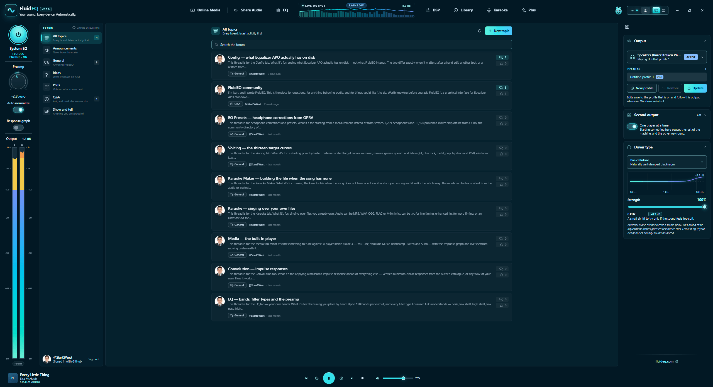
Try it
- Open Help → Forum and pick a board: Announcements, General, Ideas, Polls, Q&A or Show and tell.
- Search the forum, or open a topic to read the replies.
- Press Sign in with GitHub, finish in your browser, then post a New topic or a reply.